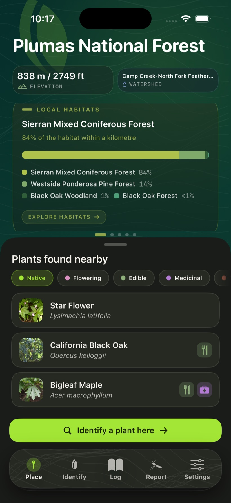
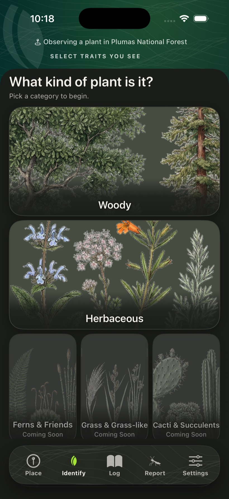
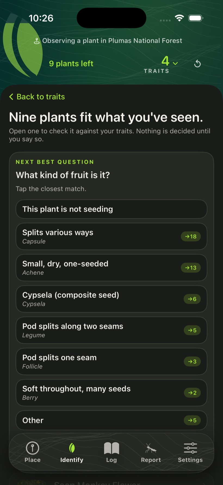
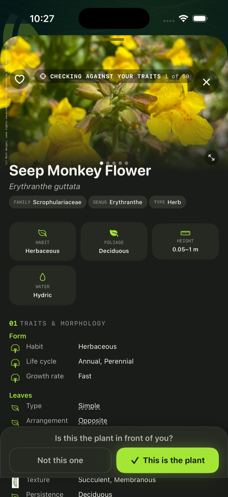
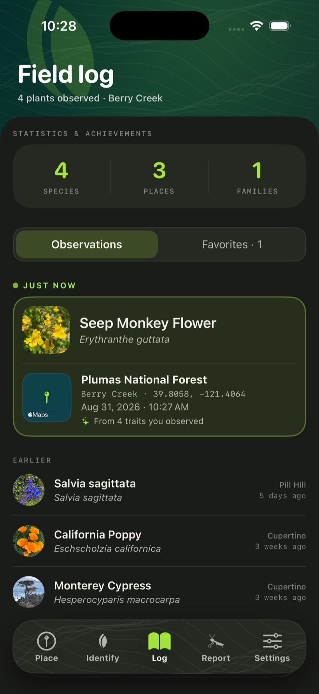
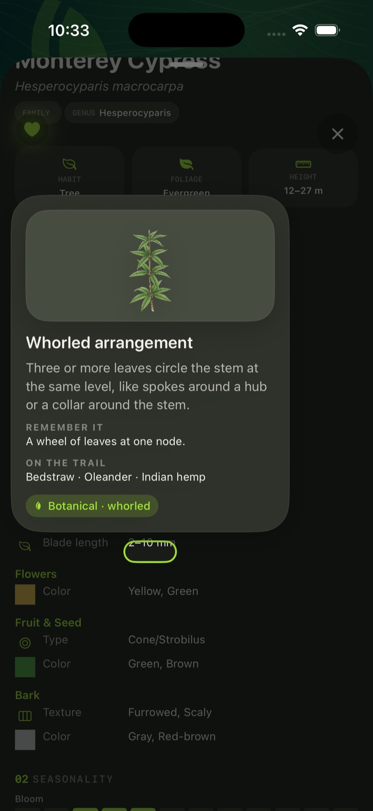

A field guide for the plants around you.
Leaf, then tells you about them: where each grows wild, how to cultivate it, its cultural significance, and its uses in traditional medicine.
Requires an iPhone and being in California.

Leaf, then tells you about them: where each grows wild, how to cultivate it, its cultural significance, and its uses in traditional medicine.
Requires an iPhone and being in California.

Leaf shows you what grows where you're standing, helps you put a name on it, and tells you about the place itself. No botany background needed.
Leaf reads your location and lists the plants observed nearby.
You identify the plant by looking at it: leaf shape, flower color, bark, habit. Each answer narrows the candidates. This takes more effort than a photo app, and it teaches you what to look for.
Every plant has its own page: photos, a description, a range map, similar species to tell apart, its cultural significance, traditional uses and a whole lot more.
Labels show which plants are native, which are invasive, and which have uses in food or medicine.
Leaf also tells you about the park you're in and the habitats and plant communities around you. How first peoples found use of the plants found here.. Discover how native people .
Open Leaf and see what's growing nearby.
Pick the traits in front of you. Skip anything you're unsure of.
Leaf asks a few focused questions and shows the likely matches.
Compare the remaining candidates, confirm the plant yourself, and read its profile.
Screens from the current beta, on a walk in Plumas National Forest.





Every trait and fact in Leaf traces to an authoritative flora. Software chooses which identification question to ask next; the botany itself comes from the sources.
Over 11,000 California plants have full profiles today, with more added daily, on the way to the roughly 23,000 recorded growing wild in the state. Natives are its strength; houseplants its weak spot, for now. Cacti, succulents, grasses, ferns, and mosses are not included yet.
Leaf improves through feedback from people using it. The only request is that you use the app and send feedback at least once. A weekly email announces new builds with what's fixed and what's new. The beta runs about 90 days.